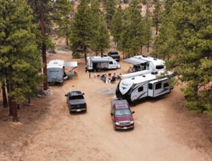
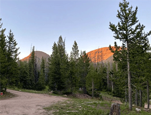

Site Name
Boondock Camping for Beginners
Purpose/Elevator Pitch
Because much of Utah’s land is owned by the Bureau of Land management, Utah might be the best state in the whole country for Boondock camping. So, what is boondock camping? Basically, it means camping in an unestablished area, with no bathrooms or water nearby. Why would anyone want to camp without bathrooms or running water you ask? It may not sound glamorous or enjoyable, but with a little planning and preparation you can gather the equipment needed to make camping off the grid a vacation to remember. Boondock camping allows you to escape the crowds and enjoy some of the most peaceful and spectacular views this state has to offer. My website will go over all you need to know about boondock camping. It will provide you with an equipment list of must have items to make off road camping and enjoyable experience. It will also map out locations of some of the best places to go boondock camping.
Target Audience and Scenarios
Target audience: The Boondock Camping for Beginners website will appeal to adults, both young and old, as well as family groups, and youth groups, who love to go camping.
- Scenario #1- A group of collage graduates going on a celebratory graduation trip.
- Scenario #2- A newly married couple going on an adventurous honeymoon camping trip.
- Scenario #3- Families with children going on an summer vacation.
- Scenario #4- A corporate business group taking their employees on a corporate retreat.
Site Logo

Site Color Scheme
Headings will be white. Sub-headings will be in Green. Body text will be black or dark-brown. Highlights and links will be in dark-green. Background will be in a light-green.
Site Typography
Typeface - Lato. Regular for the body copy, Bold for Sub-headings, and Black for Headings and Title.
Page 1 - Home Page
The definition of boondock camping, is camping off-the-grid with an RV, but we like to include tent camping this definition as well. It is also sometimes referred to as “dry camping”. This means any time you go camping without water, sewer, or electrical connections. You are camping in unestablished areas and it is important to come prepared.
This website will get you started with what you need to know to in order to go boondock camping. With a little preperation and planning ahead, boondock camping can be a fun and relaxing escape from the business of life, as well as budget friendly to your bank account!
Tent camping vs RV/Travel trailer camping
Page 2 - Equipment List
Tent Camping Equipment List
Shelter and Sleeping Needs
- Tent with rain fly
- Sleeping bag
- Pillow
- Fleece sleeping bag liner
- Blankets
- Sleeping mat or cot
- Table & chairs
- Spare batteries & Chargers
- Flashlight, headlamp, or lantern
- Canopy tent
- Tarp & rope
- Gas Firepit & Propane
Food Preparation and Eating
- Stove or Grill
- Fuel, (gas, propane, etc.)
- Matches and lighter
- Ice cooler
- Pots, pans, and tea kettle
- Chopping board
- Plates, bowls, and mugs
- Cooking and eating utensils
- Dish cloths, and dish towels
- Wash basin and dish soap
- Trash bags
- Food
- Portable water jugs (lots!)
Clothing
- Normal everyday clothing, but keep in mind that lightweight and quick drying materials like nylon will help you stay warmer, drier, and more comfortable in the cold. Cotton and denim take a long time to dray after getting wet.
- Rain jacket or poncho
- Clean and dry clothing to sleep in.
- Proper shoes that will keep you warm, dry, and protected.
- Wool hat, gloves, coat, multiple layers for warmth.
- Spare underwear and socks.
- Sun hat, sun block, after sun, and sunglasses.
Toiletries
- Your personal toiletries
- Medications
- First aid kit
- Hand sanitizer and hand soap
- Toothbrush and toothpaste
- Towels
- Insect repellent
Toilet Tent Setup
- Toilet tent
- 10-gallon bucket with fitted toilet seat
- Toilet Paper
- Biodegradable toilet bags
- Shovel
Boondock Travel Trailer Equipment List

- Camper trailer
- All the supplies needed for the trailer
- 3-4 trailer batteries
- Solar panels or generators
- Portable water jugs (lots!)
- Outdoor stove or grill
- Outdoor canopy
- Outdoor table and chairs
- Outdoor lantern
Optional
- Toilet tent
- 10-gallon bucket with fitted toilet seat
- Toilet Paper
- Biodegradable toilet bags
- Shovel
Page 3 - Camping Locations
Tom's Best Spring Dispersed Camping
- Dixie National Forest
- Toms Best Spring Rd. (FR-117) Panguitch, UT 84759
- 435-676-9300
- 435-865-3700
- GPS: 37.7275, -112.2477
- Price: $0
- Longest RV Reported: 44 feet (Fifth Wheel)
- Pad Type: dirt
- Open Seasonally: Yes
- Elevation 7,841 ft / 2,389 m
- Max Stay: 16 days
- Tent Camping: Yes
Uinta Dispersed Camping
- Uinta-Wasatch-Cache National Forest
- Utah 150 Kamas, UT
- 307-789-3194
- 801-999-2103
- GPS: 40.8756, -110.8312
- Last Price Paid: $0
- Longest RV Reported: 30 feet
- Open Seasonally: Yes
- Elevation: 8,464 ft / 2,579 m
- Max Stay: 14
- Tent Camping: Yes
Stout Canyon Dispersed Camping

- Dixie National Forest
- FR-062Duck Creek Village, UT 84762
- 435-865-3200
- 435-865-3700
- GPS: 37.4915, -112.5631
- Last Price Paid: $0
- Longest RV Reported: 40 feet (Toy Hauler Fifth Wheel)
- Pad Type: Dirt
- Elevation: 7,808 ft / 2,379 m
- Max Stay: 16
- Tent Camping: Yes
Salamander Flat Dispersed Camping

- Uinta-Wasatch-Cache National Forest
- Hwy 92 Alpine Loop Scenic Byway Provo, UT 84604
- 801-785-3563
- 801-999-2103
- GPS: 40.4395, -111.6271
- Last Price Paid: $0
- Longest RV Reported: 28 feet (Travel Trailer)
- Pad Type: Dirt
- Elevation: 7,545 ft / 2,299 m
- Max Stay: 16
- Tent Camping: Yes
Murdock Basin Dispersed Camping

- Uinta-Wasatch-Cache National Forest
- Murdock Basin Rd. (FR-137) Kamas, UT 84036
- 435-783-4338
- 801-999-2103
- GPS: 40.6318, -110.9528
- Last Price Paid: $0
- Longest RV Reported: 35 feet (Fifth Wheel)
- Pad Type: Dirt
- Open Seasonally: Yes
- Elevation: 8,891 ft / 2,709 m
- Max Stay: 14
- Tent Camping: Yes